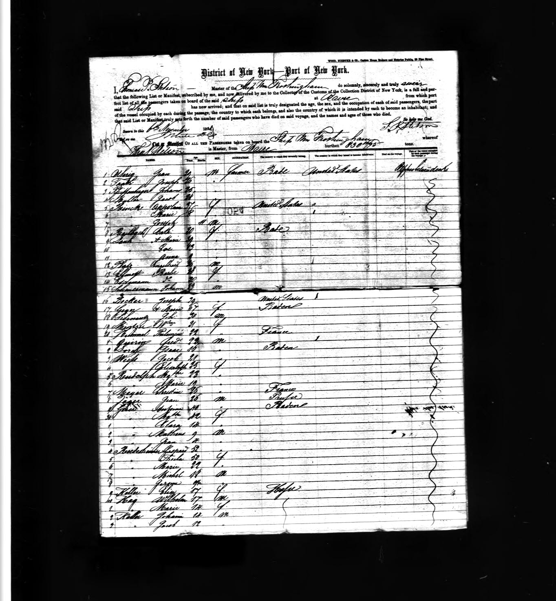
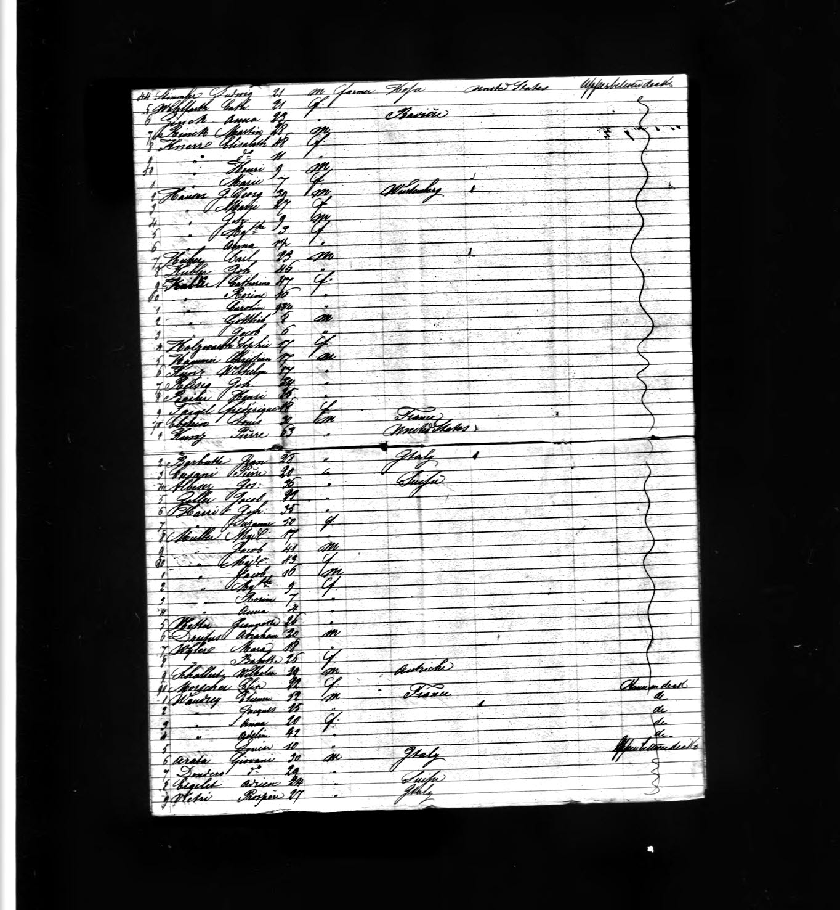
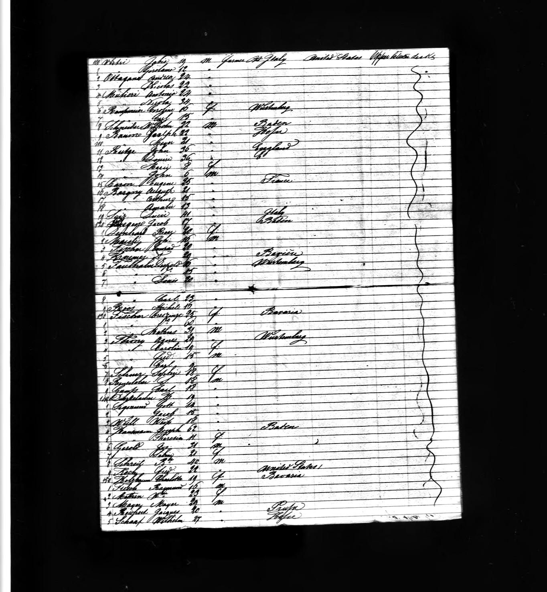
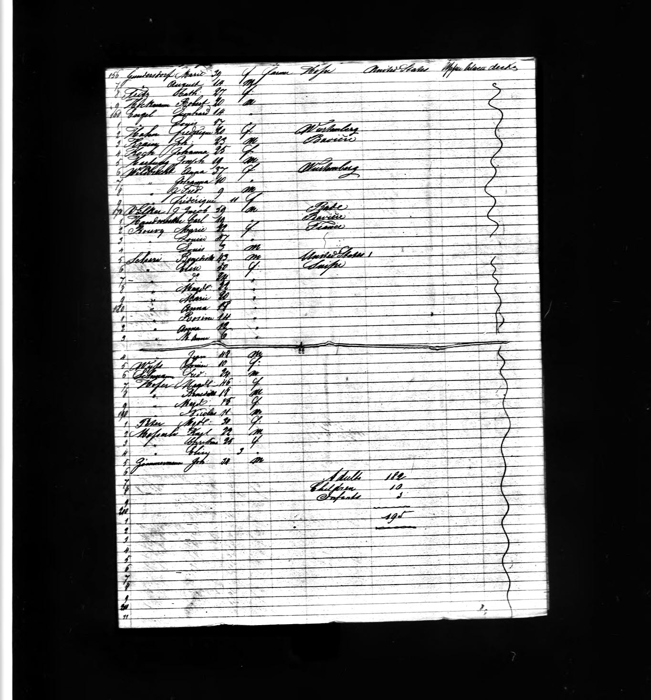

Here are four images, representing four pages (left to right, 1, 2, [next row] 3 and 4) of a ship manifest for the ship Wm. Frothingham, which arrived in the Port of New York on 6 Nov 1858. John ans his family appear as entries 11-14 on page 3
|  |  |
|  |  |